相机硬件知识
画幅等效
同焦段由于传感器面积不同导致画面范围不同，焦距换算为：
- 中画幅 ：0.7-0.8
- 全画幅 ：1
- 残幅APS-C ：1.5
- M43 ：2
- 一英寸 ：2.7
- 1/1.7英寸 ：4.5-5
- 1/2.3英寸 ：6
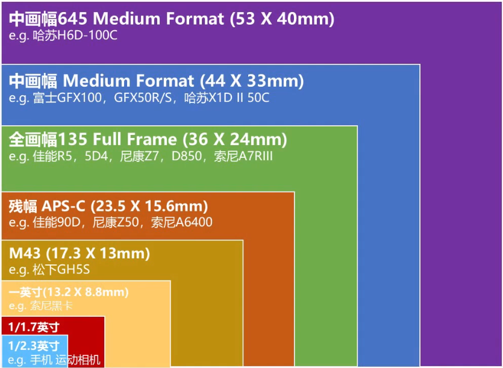
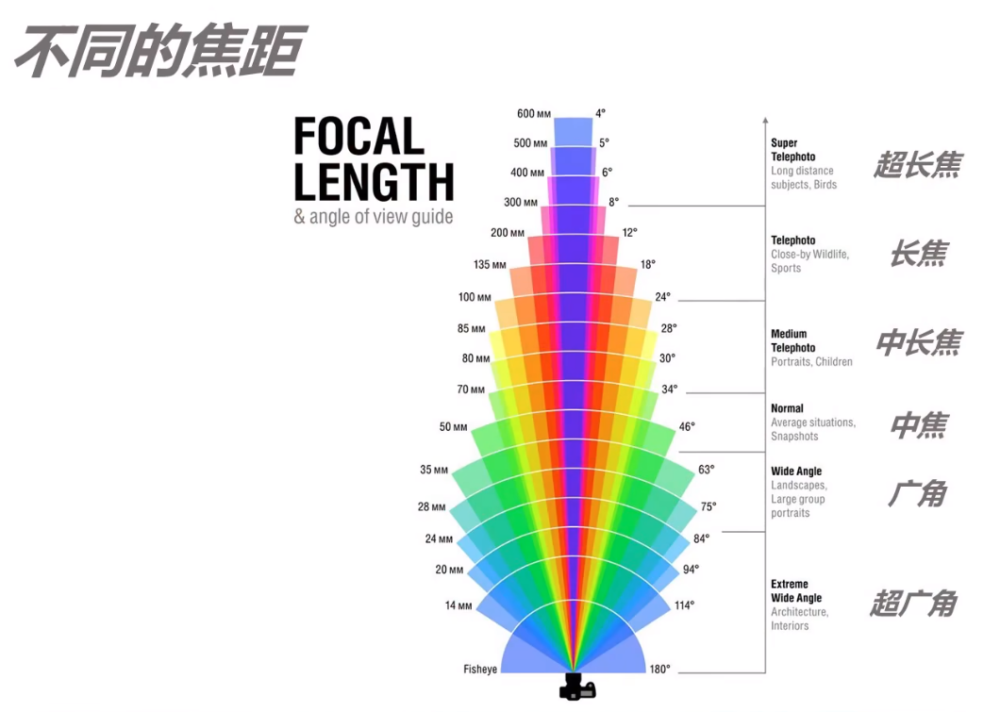
焦距
- 超广角：24mm以下，视角114°-180°，适合建筑、室内拍摄
- 广角：24-35mm，视角75°-94°，适合风光、大场景拍摄
- 中焦：35-70mm，视角34°-63°，适合普通场景、快照
- 中长焦：70-100mm，视角28°-34°，适合人像、儿童拍摄
- 长焦：100-300mm，视角8°-24°，适合野生动物、体育拍摄
- 超长焦：300mm以上，视角4°-8°，适合远距离拍摄
不同焦距会产生不同的视觉效果，影响画面的透视关系和空间感。
安全快门
- 安全快门：手持相机拍摄时能保证拍摄画面清晰的最慢快门速度
- 等于或快于镜头焦距的倒数。例如，使用 50mm 焦距的镜头时，安全快门速度应该不低于 1/50 秒
ISO
- ISO不是控制进光量的参数，只是相机感光元件对光线敏感程度的一个衡量标准，是一个增益
- 曝光补偿实际上是让相机微调光圈快门ISO，不是一个增益
- ISO并不是影响噪点的根本原因，快门和光圈导致的进光量才是影响噪点的根本原因，高ISO和后期提亮没啥区别（甚至高ISO比后期提亮噪点少一点点）
- 小光比过曝，大光比欠曝：适当过曝可以减少暗部噪点，适当欠曝可以保留高光细节
影调与色调
明度与RGB
公式如图：
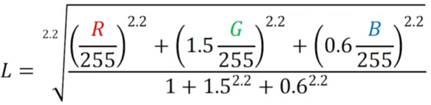
RGB三原色的明度不相同，G对明度的影响最大，B的影响最小
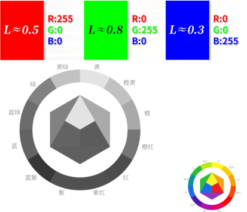
明度是往颜色里加入/减少黑色（改变RGB中的最大值和次大值）
黑白灰的色相，饱和度都是0
修改颜色会影响影调，因为颜色变化导致明度变化。比如要压暗暗部以提高对比度，还想给暗部增加蓝色，就应该降低暗部的红色和绿色，而不是提高蓝色（提高蓝色的同时会提亮暗部）
饱和度与RGB
饱和度公式为：（RGB最大值-最小值）/最大值
饱和度是往颜色里加入/减少白色（改变RGB中的最小值和次小值）
如图1，最高明度和饱和度，加入黑色，明度降低（变为图2）；加入白色，饱和度降低（变为图3）
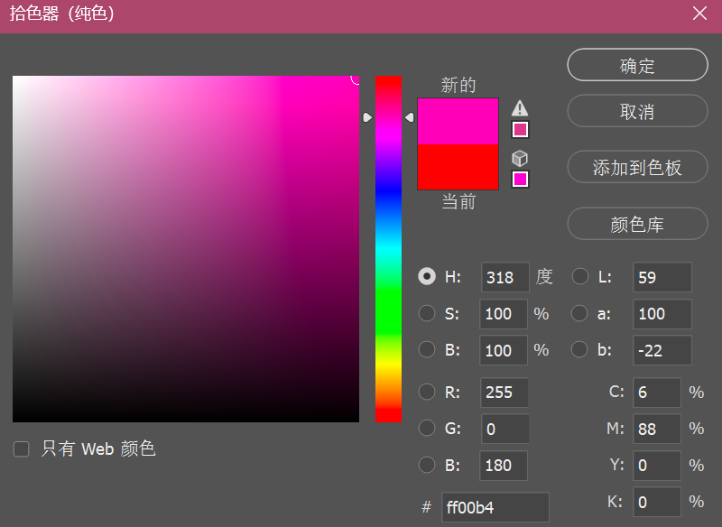
图1
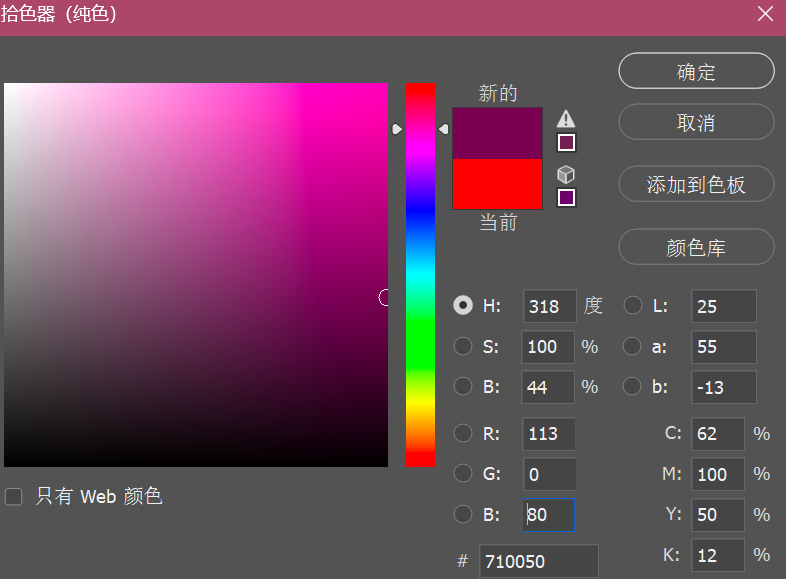
图2
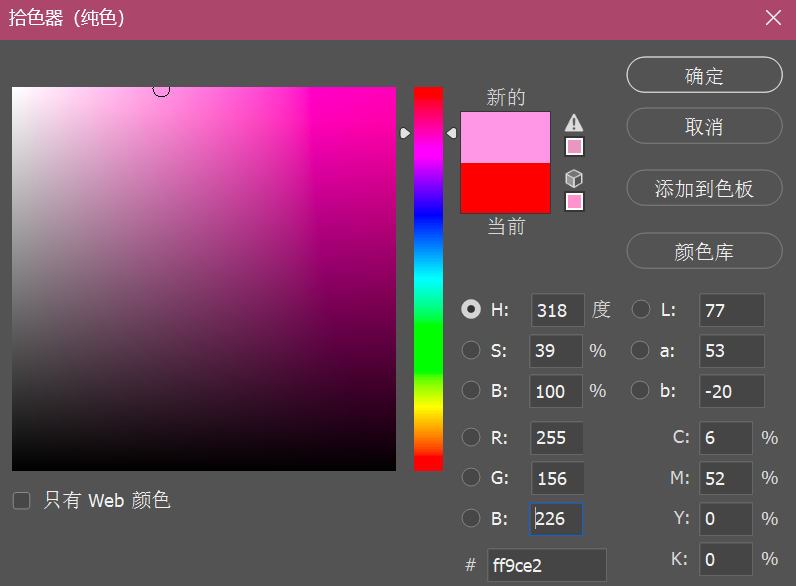
图3
色相与RGB
RGB里的最大值影响主色相
中间值影响色相偏移
最小值基本无影响
影调与色调之间的影响
高对比度会带来高饱和度，使颜色更加鲜明；而低对比度则会让颜色更细腻、更丰富。画面对比度的影响因素包括：
- 影调上的对比度：明暗之间的差异程度
-
色调上的对比度：
- 饱和度的对比度：高饱和与低饱和之间的对比
- 色相上的对比度：如对比色、邻近色之间的对比
黑/白色色阶与高光阴影区别
调整黑白色阶如图1，调整高光阴影如图2
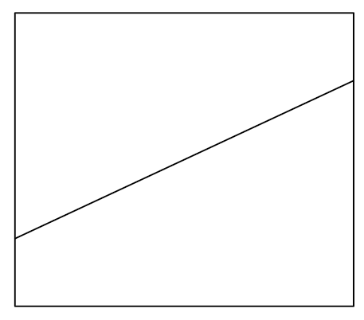
图1
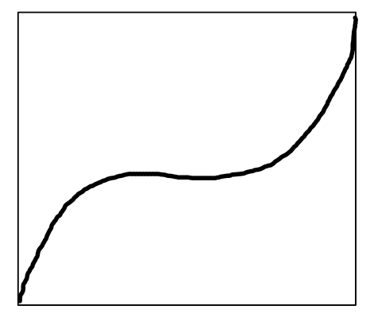
图1
影调与色调
图层混合模式
了解更多图层混合模式知识：4分钟搞懂PS图层混合模式
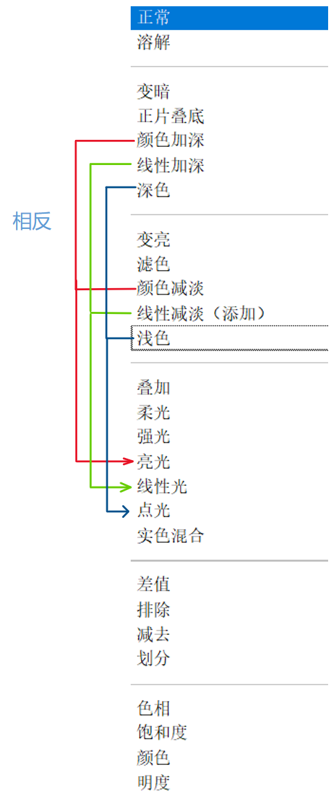
- 变暗类：包括变暗、正片叠底、颜色加深、线性加深、深色
- 变亮类：包括变亮、滤色、颜色减淡、线性减淡（添加）、浅色
- 叠加类：包括叠加、柔光、强光、亮光、线性光、点光、实色混合
- 差值类：包括差值、排除、减去、划分
- 色相类：包括色相、饱和度、颜色、明度
其中：
- 变暗：显示更暗的像素（贴白底素材），输出规则：min(A,B)
- 正片叠底：除纯白都变黑（贴黑线稿）（一黑全黑，白不变），输出规则：A*B
- 颜色加深：深色部分更暗，浅色部分影响较小
- 线性加深：对图像的变暗影响比颜色加深更加线性
- 深色：和变暗类似，但不会混合色彩
- 变亮：显示更亮的像素（贴黑底素材），输出规则：max(A,B)
- 滤色：除纯黑都变白（变亮但不会过曝）（贴线稿）（一白全白，黑不变），输出规则：1-(1-A)*(1-B)
叠加类的所有操作逻辑都是：亮度低于0.5，执行变暗部分对应操作，高于0.5执行变亮部分对应操作，如：
- 叠加：以选定图层的下一层图层亮度为基准，低于0.5执行正片叠底，高于0.5执行滤色（增对比度S曲线）
- 强光：以选定图层的亮度为基准，亮度低于0.5执行正片叠底，高于0.5执行滤色
- 柔光：复制图层，高斯模糊，改成柔光，有柔光效果
- 实色混合：A+B<1，黑，A+B>1，白
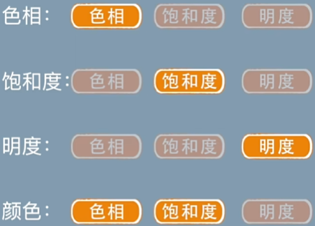
- 色相：该图层的下方图层继承该图层的色相，饱和度和明度不变
- 饱和度：该图层的下方图层继承该图层的饱和度，色相和明度不变
- 颜色：该图层的下方图层继承该图层的色相和饱和度，明度不变
- 明度：该图层的下方图层继承该图层的明度，饱和度和色相不变
观察层的创建
根据颜色类的图层混合模式，可以创建出观察层：
-
明度观察层
- 创建纯色中性灰蒙版，混合模式改为“颜色“
- 原理：中性灰蒙版下面的图层继承了中性灰的颜色（色相和饱和度），都是0，只剩下明度
-
颜色观察层（色相+饱和度）
- 创建纯色中性灰蒙版，混合模式改为“明度“，可以更改中性灰的灰度方便观察颜色
- 原理：中性灰蒙版下面的图层继承了中性灰的明度，消除了明度差，只剩颜色
-
色相图层
- 在颜色观察层的基础上再加一个满饱和度的纯色蒙版，混合模式改为饱和度（注意，因为黑色色相为0，满饱和度变红）
- 原理：在颜色的基础上饱和度全为100%，只剩色相信息
-
饱和度图层
- 在颜色观察层的基础上再加一个某个颜色的纯色蒙版（不要黑白色），混合模式改为色相，饱和度越高的地方该颜色越重
- 原理：在颜色的基础上色相统一了，只剩下饱和度信息
相机校准
-
原色往一个方向偏，另一个方向的颜色就减淡
- 以红色举例，红偏橙，红和左边都是橙，右边的品消失
- 蓝偏青，蓝和青都是青，旁边的品消失
-
可以作为色彩统一的一个工具，如：
- 蓝偏青，红偏橙，就是青橙色调，绿往黄偏，橙色多，绿往青偏，青色多
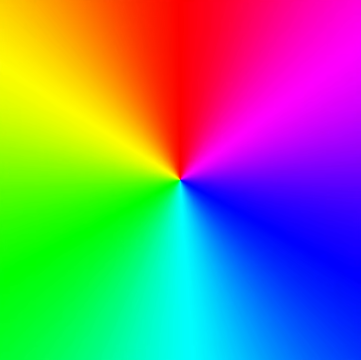
可以导入PS中自行操作
混合颜色带
了解更多混合颜色带知识：3分钟深度解析超实用的PS神器—混合颜色带
"本图层"滑块表示本图层的处于滑块之间的内容会显示出来，滑块外的会隐藏
- 按住alt键可以把一个按钮分成两个，做出渐变的效果，过渡柔和
"下一图层"滑块表示下一图层处于滑块之间的内容会被本图层覆盖，滑块外的不会被本图层覆盖
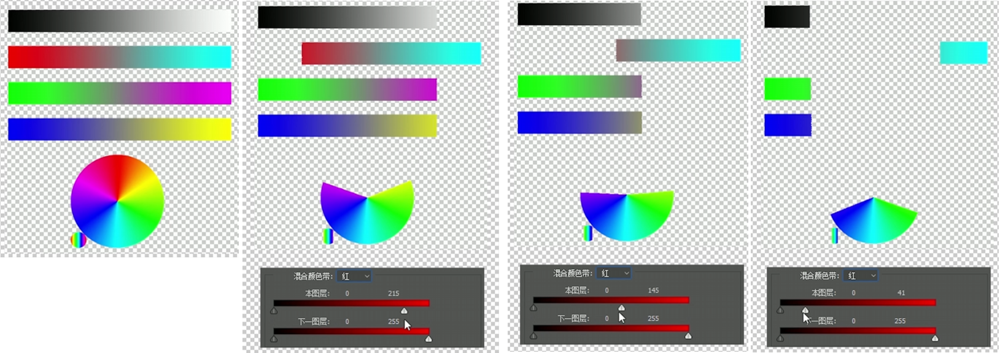
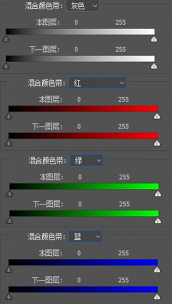
操作实例
柔光
了解更多柔光效果知识：无废话，一分钟，两种方法教你做出ps柔光效果
方法1（整体柔光）：复制图层，滤镜，其他，高反差保留，ctrl+i反相，混合模式柔光
方法2（高光柔光）：选择，色彩范围，高光，提取高光后复制高光图层，高斯模糊，混合模式柔光，程度不够的话多复制几层
了解更多柔光效果知识：【PS教程】PS柔光效果如何制作
小清新柔光：复制图层，高斯模糊（程度可以大一点）（这一步会提亮）,滤色，将滤色图层再复制一层，柔光，使用曲线压暗滤色图层（ctrl+M）（或图像-调整-曲线），最后将两层图层编组，新建白色蒙版，把想要还原的细节涂黑，可以降低图层不透明度减弱效果
柔光渗色法：可以选取花的某一个部分，晶格化，高斯模糊，得到一个花颜色的图层，然后柔光覆盖整张图片，为环境赋上花色
去朦胧
创建天空蒙版，增加去朦胧，可以拉回部分过曝的细节，恢复蓝天
8bit
了解更多8bit效果知识：游戏秒变“8-Bit”像素风？这两个方法，你该学起来了！
在开始前对于颜色丰富锐度高的图片可以用滤镜库进行预处理：
- 木刻滤镜减少减淡颜色
- 海报边缘：深色描边
- 色调分离也可以用
然后图像-图像大小-分辨率改为10-30，重新采样硬边缘，再把分辨率改回来
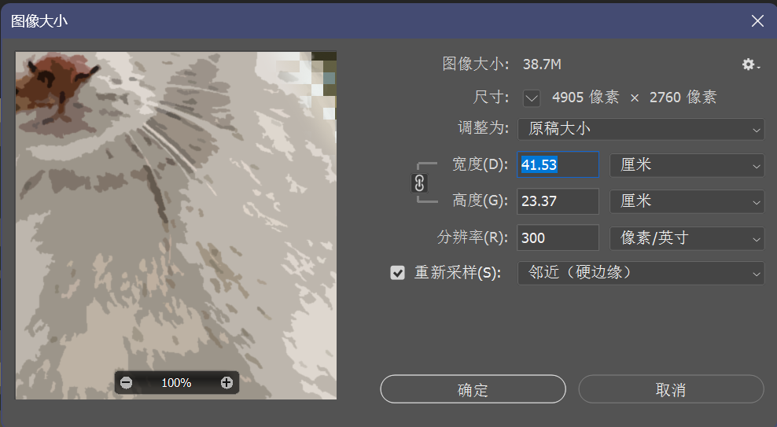
最后图像-模式-索引颜色-调低，再改回RGB（如果有主体抠图先导出处理完再导入，用蒙版处理边缘）